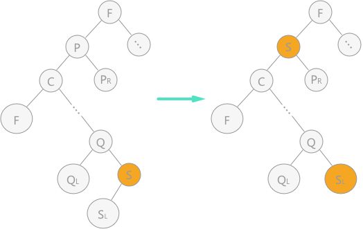

二叉排序树（二叉查找树）及C语言实现
前几节介绍的都是有关静态查找表的相关知识，从本节开始介绍另外一种查找表——动态查找表。
动态查找表中做查找操作时，若查找成功可以对其进行删除；如果查找失败，即表中无该关键字，可以将该关键字插入到表中。
动态查找表的表示方式有多种，本节介绍一种使用树结构表示动态查找表的实现方法——二叉排序树（又称为“二叉查找树”）。
图 1 二叉排序树
所以，二叉排序树表示动态查找表做插入操作，只需要稍微更改一下上面的代码就可以实现，具体实现代码为：
例如，假设原二叉排序树为空树，在对动态查找表
图 2 二叉排序树插入过程
通过不断的查找和插入操作，最终构建的二叉排序树如图 2（5） 所示。当使用中序遍历算法遍历二叉排序树时，得到的序列为：
假设要删除的为结点 p，则对于二叉排序树来说，需要根据结点 p 所在不同的位置作不同的操作，有以下 3 种可能：
1、结点 p 为叶子结点，此时只需要删除该结点，并修改其双亲结点的指针即可；
2、结点 p 只有左子树或者只有右子树，如果 p 是其双亲节点的左孩子，则直接将 p 节点的左子树或右子树作为其双亲节点的左子树；反之也是如此，如果 p 是其双亲节点的右孩子，则直接将 p 节点的左子树或右子树作为其双亲节点的右子树；
3、结点 p 左右子树都有，此时有两种处理方式：
图 3 二叉排序树中删除结点（1）
例如：查找表
图 5 不同构造的二叉排序树
使用二叉排序树实现动态查找操作的过程，实际上就是从二叉排序树的根结点到查找元素结点的过程，所以时间复杂度同被查找元素所在的树的深度（层次数）有关。
为了弥补二叉排序树构造时产生如图 5 右侧所示的影响算法效率的因素，需要对二叉排序树做“平衡化”处理，使其成为一棵平衡二叉树。
动态查找表中做查找操作时，若查找成功可以对其进行删除；如果查找失败，即表中无该关键字，可以将该关键字插入到表中。
动态查找表的表示方式有多种，本节介绍一种使用树结构表示动态查找表的实现方法——二叉排序树（又称为“二叉查找树”）。
什么是二叉排序树？
二叉排序树要么是空二叉树，要么具有如下特点：- 二叉排序树中，如果其根结点有左子树，那么左子树上所有结点的值都小于根结点的值；
- 二叉排序树中，如果其根结点有右子树，那么右子树上所有结点的值都大小根结点的值；
- 二叉排序树的左右子树也要求都是二叉排序树；
图 1 二叉排序树
使用二叉排序树查找关键字
二叉排序树中查找某关键字时，查找过程类似于次优二叉树，在二叉排序树不为空树的前提下，首先将被查找值同树的根结点进行比较，会有 3 种不同的结果：- 如果相等，查找成功；
- 如果比较结果为根结点的关键字值较大，则说明该关键字可能存在其左子树中；
- 如果比较结果为根结点的关键字值较小，则说明该关键字可能存在其右子树中；
BiTree SearchBST(BiTree T,KeyType key){
//如果递归过程中 T 为空，则查找结果，返回NULL；或者查找成功，返回指向该关键字的指针
if (!T || key==T->data) {
return T;
}else if(key<T->data){
//递归遍历其左孩子
return SearchBST(T->lchild, key);
}else{
//递归遍历其右孩子
return SearchBST(T->rchild, key);
}
}
二叉排序树中插入关键字
二叉排序树本身是动态查找表的一种表示形式，有时会在查找过程中插入或者删除表中元素，当因为查找失败而需要插入数据元素时，该数据元素的插入位置一定位于二叉排序树的叶子结点，并且一定是查找失败时访问的最后一个结点的左孩子或者右孩子。
例如，在图 1 的二叉排序树中做查找关键字 1 的操作，当查找到关键字 3 所在的叶子结点时，判断出表中没有该关键字，此时关键字 1 的插入位置为关键字 3 的左孩子。
所以，二叉排序树表示动态查找表做插入操作，只需要稍微更改一下上面的代码就可以实现，具体实现代码为：
BOOL SearchBST(BiTree T,KeyType key,BiTree f,BiTree *p){
//如果 T 指针为空，说明查找失败，令 p 指针指向查找过程中最后一个叶子结点，并返回查找失败的信息
if (!T){
*p=f;
return false;
}
//如果相等，令 p 指针指向该关键字，并返回查找成功信息
else if(key==T->data){
*p=T;
return true;
}
//如果 key 值比 T 根结点的值小，则查找其左子树；反之，查找其右子树
else if(key<T->data){
return SearchBST(T->lchild,key,T,p);
}else{
return SearchBST(T->rchild,key,T,p);
}
}
//插入函数
BOOL InsertBST(BiTree T,ElemType e){
BiTree p=NULL;
//如果查找不成功，需做插入操作
if (!SearchBST(T, e,NULL,&p)) {
//初始化插入结点
BiTree s=(BiTree)malloc(sizeof(BiTree));
s->data=e;
s->lchild=s->rchild=NULL;
//如果 p 为NULL，说明该二叉排序树为空树，此时插入的结点为整棵树的根结点
if (!p) {
T=s;
}
//如果 p 不为 NULL，则 p 指向的为查找失败的最后一个叶子结点，只需要通过比较 p 和 e 的值确定 s 到底是 p 的左孩子还是右孩子
else if(e<p->data){
p->lchild=s;
}else{
p->rchild=s;
}
return true;
}
//如果查找成功，不需要做插入操作，插入失败
return false;
}
通过使用二叉排序树对动态查找表做查找和插入的操作，同时在中序遍历二叉排序树时，可以得到有关所有关键字的一个有序的序列。例如，假设原二叉排序树为空树，在对动态查找表
{3，5，7，2，1} 做查找以及插入操作时，可以构建出一个含有表中所有关键字的二叉排序树，过程如图 2 所示:图 2 二叉排序树插入过程
通过不断的查找和插入操作，最终构建的二叉排序树如图 2（5） 所示。当使用中序遍历算法遍历二叉排序树时，得到的序列为：
1 2 3 5 7 ，为有序序列。一个无序序列可以通过构建一棵二叉排序树，从而变成一个有序序列。
二叉排序树中删除关键字
在查找过程中，如果在使用二叉排序树表示的动态查找表中删除某个数据元素时，需要在成功删除该结点的同时，依旧使这棵树为二叉排序树。假设要删除的为结点 p，则对于二叉排序树来说，需要根据结点 p 所在不同的位置作不同的操作，有以下 3 种可能：
1、结点 p 为叶子结点，此时只需要删除该结点，并修改其双亲结点的指针即可；
2、结点 p 只有左子树或者只有右子树，如果 p 是其双亲节点的左孩子，则直接将 p 节点的左子树或右子树作为其双亲节点的左子树；反之也是如此，如果 p 是其双亲节点的右孩子，则直接将 p 节点的左子树或右子树作为其双亲节点的右子树；
3、结点 p 左右子树都有，此时有两种处理方式：
1）令结点 p 的左子树为其双亲结点的左子树；结点 p 的右子树为其自身直接前驱结点的右子树，如图 3 所示；
图 3 二叉排序树中删除结点（1）
2）用结点 p 的直接前驱（或直接后继）来代替结点 p，同时在二叉排序树中对其直接前驱（或直接后继）做删除操作。如图 4 为使用直接前驱代替结点 p：

图 4 二叉排序树中删除结点（2）
图 4 二叉排序树中删除结点（2）
具体实现代码：（可运行）图 4 中，在对左图进行中序遍历时，得到的结点 p 的直接前驱结点为结点 s，所以直接用结点 s 覆盖结点 p，由于结点 s 还有左孩子，根据第 2 条规则，直接将其变为双亲结点的右孩子。
#include<stdio.h>
#include<stdlib.h>
#define TRUE 1
#define FALSE 0
#define ElemType int
#define KeyType int
/* 二叉排序树的节点结构定义 */
typedef struct BiTNode
{
int data;
struct BiTNode *lchild, *rchild;
} BiTNode, *BiTree;
//二叉排序树查找算法
int SearchBST(BiTree T, KeyType key, BiTree f, BiTree *p) {
//如果 T 指针为空，说明查找失败，令 p 指针指向查找过程中最后一个叶子结点，并返回查找失败的信息
if (!T) {
*p = f;
return FALSE;
}
//如果相等，令 p 指针指向该关键字，并返回查找成功信息
else if (key == T->data) {
*p = T;
return TRUE;
}
//如果 key 值比 T 根结点的值小，则查找其左子树；反之，查找其右子树
else if (key < T->data) {
return SearchBST(T->lchild, key, T, p);
}
else {
return SearchBST(T->rchild, key, T, p);
}
}
int InsertBST(BiTree *T, ElemType e) {
BiTree p = NULL;
//如果查找不成功，需做插入操作
if (!SearchBST((*T), e, NULL, &p)) {
//初始化插入结点
BiTree s = (BiTree)malloc(sizeof(BiTNode));
s->data = e;
s->lchild = s->rchild = NULL;
//如果 p 为NULL，说明该二叉排序树为空树，此时插入的结点为整棵树的根结点
if (!p) {
*T = s;
}
//如果 p 不为 NULL，则 p 指向的为查找失败的最后一个叶子结点，只需要通过比较 p 和 e 的值确定 s 到底是 p 的左孩子还是右孩子
else if (e < p->data) {
p->lchild = s;
}
else {
p->rchild = s;
}
return TRUE;
}
//如果查找成功，不需要做插入操作，插入失败
return FALSE;
}
//删除函数
int Delete(BiTree *p)
{
BiTree q, s;
//情况 1，结点 p 本身为叶子结点，直接删除即可
if (!(*p)->lchild && !(*p)->rchild) {
*p = NULL;
}
else if (!(*p)->lchild) { //左子树为空，只需用结点 p 的右子树根结点代替结点 p 即可；
q = *p;
*p = (*p)->rchild;
free(q);
}
else if (!(*p)->rchild) {//右子树为空，只需用结点 p 的左子树根结点代替结点 p 即可；
q = *p;
*p = (*p)->lchild;//这里不是指针 *p 指向左子树，而是将左子树存储的结点的地址赋值给指针变量 p
free(q);
}
else {//左右子树均不为空，采用第 2 种方式
q = *p;
s = (*p)->lchild;
//遍历，找到结点 p 的直接前驱
while (s->rchild)
{
q = s;
s = s->rchild;
}
//直接改变结点 p 的值
(*p)->data = s->data;
//判断结点 p 的左子树 s 是否有右子树，分为两种情况讨论
if (q != *p) {
q->rchild = s->lchild;//若有，则在删除直接前驱结点的同时，令前驱的左孩子结点改为 q 指向结点的孩子结点
}
else {
q->lchild = s->lchild;//否则，直接将左子树上移即可
}
free(s);
}
return TRUE;
}
int DeleteBST(BiTree *T, int key)
{
if (!(*T)) {//不存在关键字等于key的数据元素
return FALSE;
}
else
{
if (key == (*T)->data) {
Delete(T);
return TRUE;
}
else if (key < (*T)->data) {
//使用递归的方式
return DeleteBST(&(*T)->lchild, key);
}
else {
return DeleteBST(&(*T)->rchild, key);
}
}
}
void order(BiTree t)//中序输出
{
if (t == NULL) {
return;
}
order(t->lchild);
printf("%d ", t->data);
order(t->rchild);
}
int main()
{
int i;
int a[5] = { 3,4,2,5,9 };
BiTree T = NULL;
for (i = 0; i < 5; i++) {
InsertBST(&T, a[i]);
}
printf("中序遍历二叉排序树：\n");
order(T);
printf("\n");
printf("删除3后，中序遍历二叉排序树：\n");
DeleteBST(&T, 3);
order(T);
}
运行结果：
中序遍历二叉排序树：
2 3 4 5 9
删除3后，中序遍历二叉排序树：
2 4 5 9
2 3 4 5 9
删除3后，中序遍历二叉排序树：
2 4 5 9
总结
使用二叉排序树在查找表中做查找操作的时间复杂度同建立的二叉树本身的结构有关。即使查找表中各数据元素完全相同，但是不同的排列顺序，构建出的二叉排序树大不相同。例如：查找表
{45，24，53，12，37，93} 和表 {12，24，37，45，53，93} 各自构建的二叉排序树图下图所示：
图 5 不同构造的二叉排序树
使用二叉排序树实现动态查找操作的过程，实际上就是从二叉排序树的根结点到查找元素结点的过程，所以时间复杂度同被查找元素所在的树的深度（层次数）有关。
为了弥补二叉排序树构造时产生如图 5 右侧所示的影响算法效率的因素，需要对二叉排序树做“平衡化”处理，使其成为一棵平衡二叉树。
平衡二叉树是动态查找表的另一种实现方式，下一节做重点介绍。
关注公众号「站长严长生」，在手机上阅读所有教程，随时随地都能学习。内含一款搜索神器，免费下载全网书籍和视频。

微信扫码关注公众号